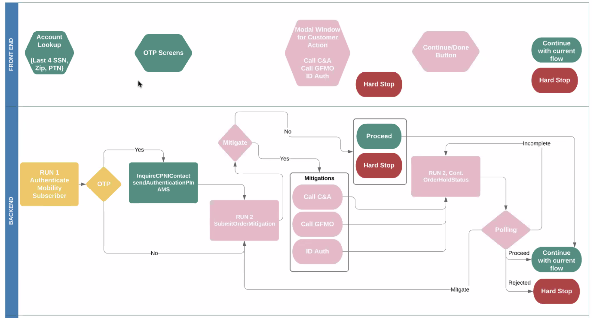
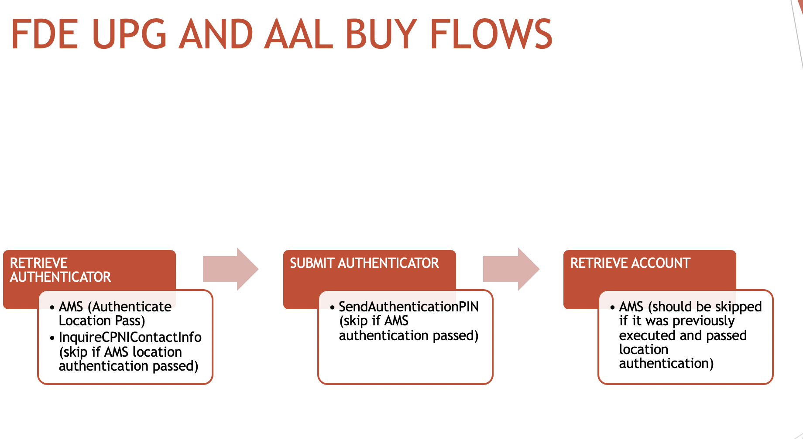
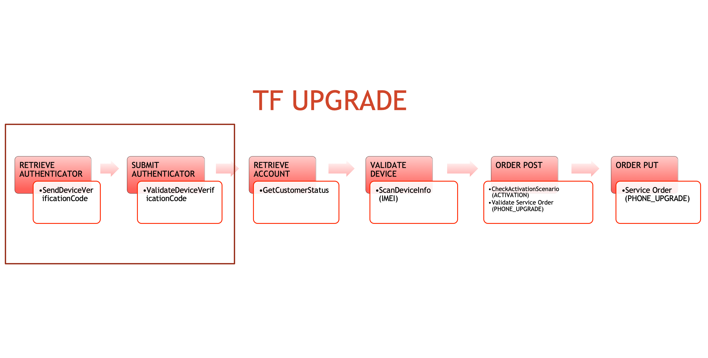

reveal.js
Demo
TEAM MEMBERS
PO - GUILLERMO PITBLADDO
TDM - JONATHAN ORTIZ
DEV - DANNY NARANJO
DEV - SANTIAGO RODRIGUEZ
DEV - ENRIQUE DELGADO
DEV - FERNANDO J GARCIA
DEV - JOSE RIVERA
20.07 – 106% (26.5/25)
Fraud Decision Engine PAM implementation
TracFone PAM support
Bug resolution for AT&T, Apple TradeIn and SquareTrade
20.08 – 100% (31/31)
Fraud Decision Engine PAM implementation
TracFone PAM support
Bug resolution
MAIN TOPICS
AT&T FRAUD DETECTION ENGINE(FDE)
TRACFONE PAM INTEGRATION - INITIAL WORK
1. AT&T FRAUD DETECTION ENGINE(FDE)
Fraud Protection flow allows AT&T to validate Existing Customer profile, changes to the profile, if any, authenticate their identification and provide mitigation wherever required. Customers will not be able to upgrade unless authenticated.
1. AT&T FRAUD DETECTION ENGINE(FDE)

1. AT&T FRAUD DETECTION ENGINE(FDE)

CHALLENGES FOR FDE
We could not test error scenarios against carrier, just the happy path.
Let's go to the code
2. TRACFONE PAM INTEGRATION - INITIAL WORK
A New supported carrier for prepaid activations.
2. TRACFONE PAM INTEGRATION - INITIAL WORK

WHAT WE DID
Changes in Canonical Workflows
Carrier Testing
BDD Creation
CHALLENGES FOR TRACFONE
Changes in the version of the API documentation during the normalization process
Lack of examples for error scenarios.
We were not able to test all carrier endpoints yet.
Let's go to the code
UPCOMING WORK
PAM support for TracFone payments with Aurus
FDE PAM integration
PAM AT&T Returns and Exchanges support
TracFone PAM integration
PROD support